Quarto, step by step
Reports and slides straight from your R code. Every feature is a build: the file on the left grows one step at a time, and what Quarto makes of it appears on the right.
Start hereHow Quarto works, in one build
Your file goes in; knitr runs the R; Pandoc writes the page. Five steps, each from a real render.
Course mapThree days, nine blocks, three labs
Each day: three blocks, then a 45-minute lab that ends on a done test.
One report, from a blank file
Markdown, YAML, chunk options, inline numbers, figures, tables, cross-references, layout.
The report, everywhere
Word and PDF from one source, parameters, 13 regions from one script, brand and Arabic.
The same analysis as a deck
Revealjs slides, layouts, pacing, code on slides, motion, brand, and sharing.
BonusA GASTAT template, ready to use
Everything the course built, packed into one folder in the GASTAT house style. Copy it, render it, and start from there.
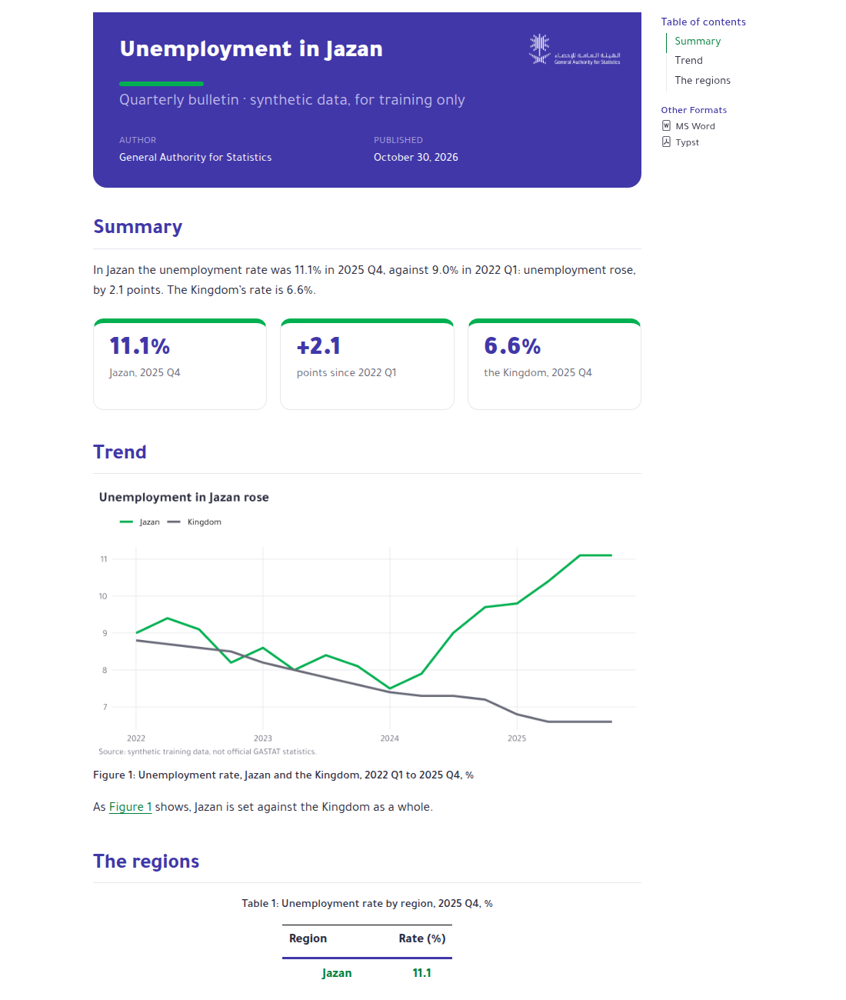
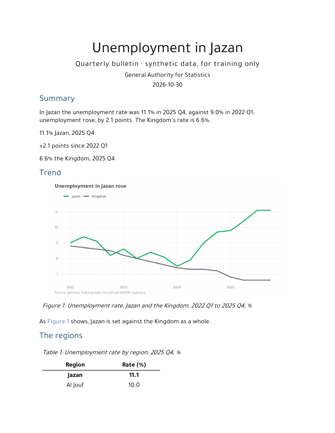
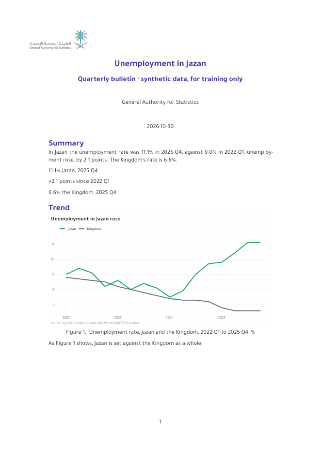
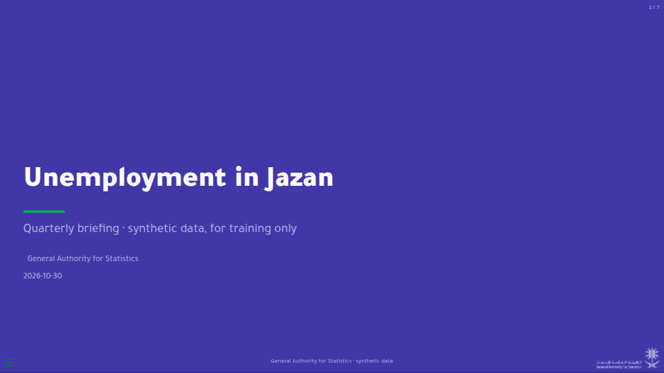
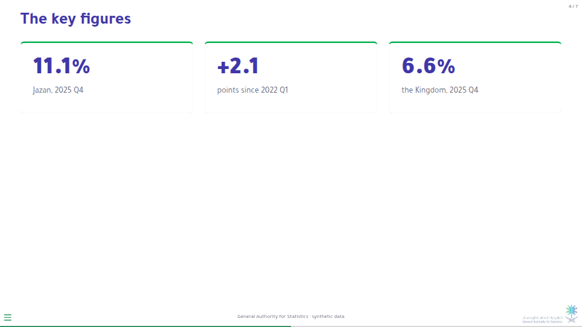
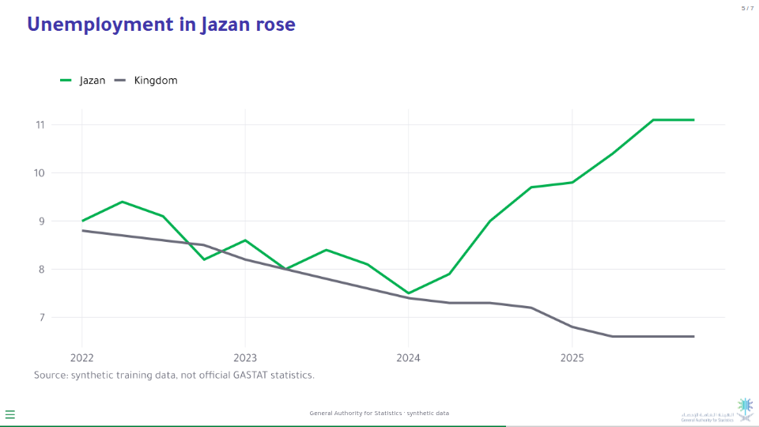
From the zip to your own report
- Unpack the zip and open the folder in Positron
- Render
report.qmd; for another region,quarto render report.qmd -P region:Riyadh - Render
slides.qmdfor the briefing - Put your own data in
data/and your own sentences in the text theme_gastat()andtt_gastat()give every chart and table the house style
Instructor · the quiz roomThe quizzes, live in the deck, with a leaderboard
Every quiz in the deck plays live. → opens the question and the clock runs on every screen; the reveal shows how the room voted and who was fastest. After each quiz the leaderboard climbs on the same slide, and the speed games play themselves. One leaderboard runs through the three days. It runs on your laptop with Python and nothing else, and needs no internet.
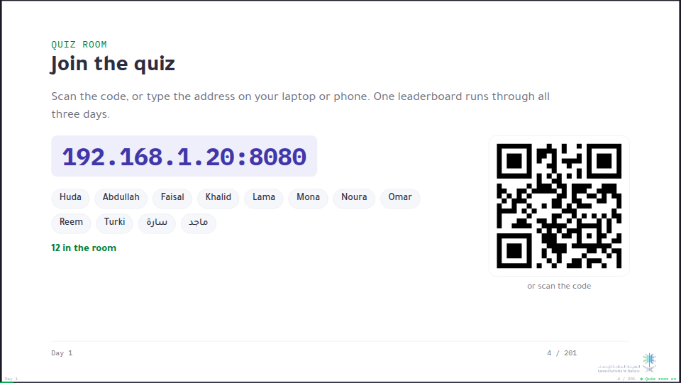
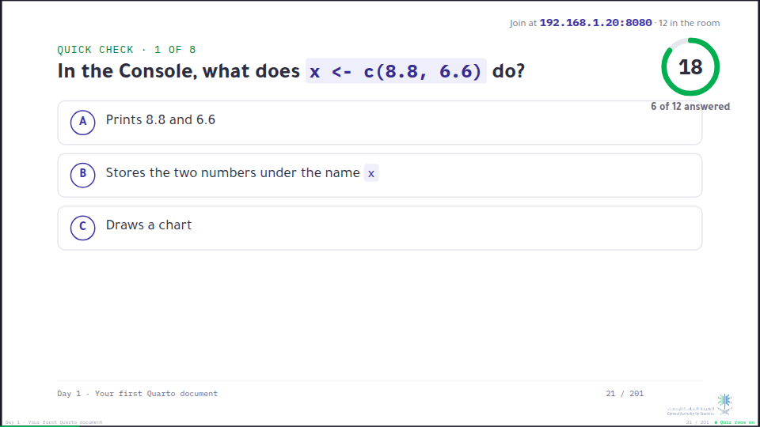
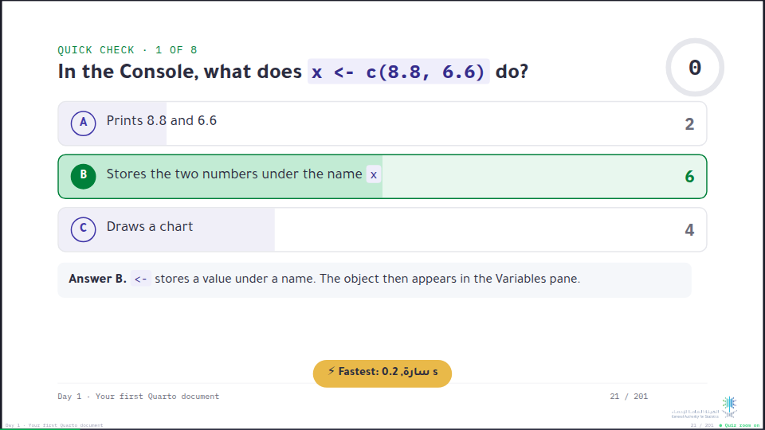
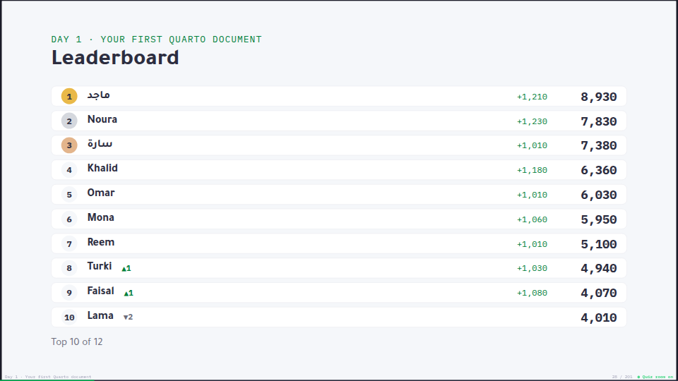
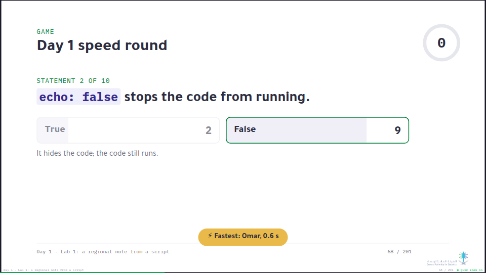
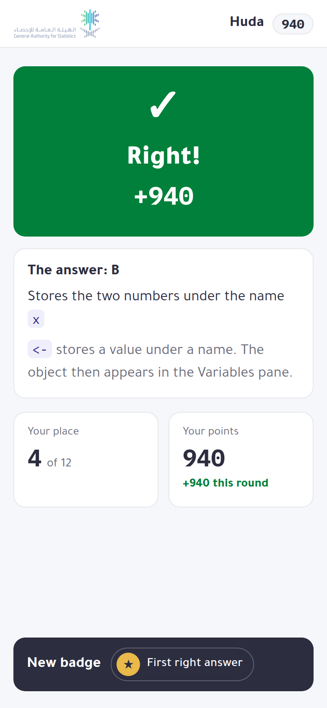
Running it
- Download the whole course (the button below) and unzip it on the laptop you present from.
- In the course folder, run
python3 room/room.py. It prints the addresses. - Open
http://localhost:8080/deckand present as usual. Each day starts on a join slide: participants scan the code on the same Wi-Fi as your laptop. If the network keeps devices apart, share your phone's hotspot. - On a quiz slide, → opens the question and → again shows the answer before the time is up; then → moves on. After a quiz's last question, → shows the leaderboard.
- Award a passed done test (+500) or work shown to the room (+300) from
http://localhost:8080/host.
A right answer earns 500 points, and up to 500 more for speed. Each right answer in a row after the first adds 50, up to 250.
The scores stay in room/room-state.json: close the room at the end of the day and start it again tomorrow to carry on. Names never leave your laptop. Opened anywhere else, the deck is the ordinary deck.
The builds are HyperFrames compositions. They play in the browser with nothing fetched from the internet, so the course works on an offline machine.